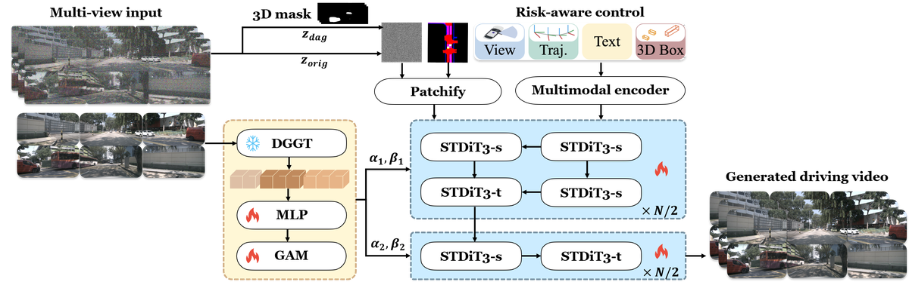
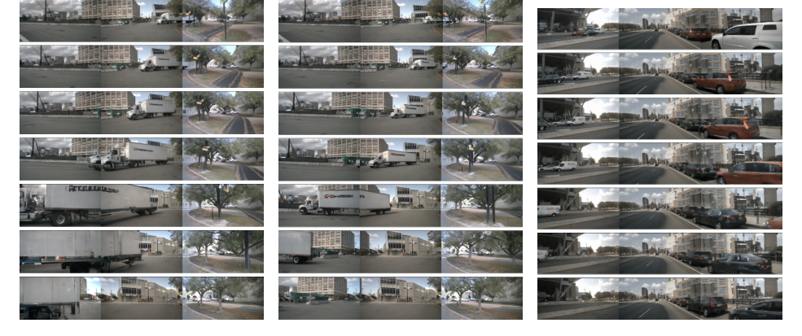

Risk-Controllable：用于生成驾驶场景的多视图扩散
简单摘要
生成安全关键的驾驶场景对于评估和改进自动驾驶系统至关重要。我们提出了RiskMV-DPO，这是一个通用且系统的管道，用于生成物理信息丰富、风险可控的多视图场景。

因此，我们提出了用于驱动场景生成的风险可控多视图扩散，该框架使风险成为一流的控制旋钮，同时提高几何保真度和局部动态真实感。我们提出了一个风险可控综合的通用流程，将驾驶风险重新表述为主动控制信号，从而能够在目标风险水平自动生成动态轨迹和 3D 框。
核心创新
论文真正新增的设计，首先体现在 我们提出了 RiskMV-DPO，这是一个通用且系统的管道，用于生成物理信息丰富、风险可控的多视图场景。这一步不是换个说法重复问题定义，而是直接改动了方法主线的切入点。
进一步看，为了确保时空一致性和几何保真度，我们引入了几何外观对齐模块和具有运动感知掩蔽的区域感知直接偏好优化（RA-DPO）策略，以将学习重点放在局部动态区域上。作者这样安排，是为了让前面的表示、约束或训练信号继续影响后面的求解链路。
进一步看，关键词 自动驾驶，驾驶场景生成，风险可控生成，多视点视频扩散，直接偏好优化 1 引言 自动驾驶系统最终取决于其在驾驶场景中的安全性和可靠性。作者这样安排，是为了让前面的表示、约束或训练信号继续影响后面的求解链路。
技术细节
围绕 技术总览，首先，风险控制模块根据目标风险生成基于物理的运动。其次，多视图扩散生成器根据结构化运动控制渲染未来帧。给定多视图观察和场景上下文，风险控制模块在指定风险级别生成的轨迹和 3D 边界框被用作结构化运动条件。作者这样设计，是为了把这一节的输入、约束和输出关系讲清楚。
3 问题表述
围绕 3 问题表述，与被动预测模型不同，我们的框架将驾驶风险重新表述为用于结构化调节的主动控制信号。首先，风险控制模块根据目标风险生成基于物理的运动。其次，多视图扩散生成器根据结构化运动控制渲染未来帧。作者这样设计，是为了把这一节的输入、约束和输出关系讲清楚。
$$ \mathbf{U}=\Big\{\big(\mathbf{x}^{a}_{1:H},\mathbf{b}^{a}_{1:H}\big)\Big\}_{a\in\mathcal{A}} . $$
这条式子把场景里每个参与体的未来轨迹和 3D 框统一打包成结构化控制集合 U。后续生成器并不是直接凭空预测未来，而是先接收这样一组显式运动条件。
$$ \mathbf{U}=g(\mathbf{I}_{1:T},\mathbf{M},\mathbf{y},\mathbf{r}^{*}). $$
这条式子表示控制模块根据历史多视图观测、场景上下文以及目标风险水平，生成结构化运动条件 U。它说明论文把“风险可控”落实成了一个可显式调节的条件变量，而不是事后打标签。
$$ \hat{\mathbf{I}}_{T+1:T+H}=f(\mathbf{I}_{1:T},\mathbf{M},\mathbf{y},\mathbf{U}). $$
这条式子给出了未来多视图图像的生成接口：模型根据历史观测、场景条件和结构化运动变量 U 直接预测后续帧。也就是说，前面风险控制模块产出的条件，最终会通过这里真正影响生成结果。
4 风险控制的运动生成
围绕 4 风险控制的运动生成，这一节先处理的是 本节介绍我们如何对驾驶风险进行建模，揭示典型场景中的风险分布，并展示如何控制风险水平以生成相应的轨迹和 3D 框。作者这样设计，是为了先把输入表示、约束条件或中间状态整理成后续模块能直接使用的形式。
4.1 每帧风险计算
围绕 4.1 每帧风险计算，我们计算每个智能体的风险贡献，并可选择将它们聚合成每帧标量风险。此外，我们引入了代理类型系数来反映不同类别的严重性差异（例如，重型卡车与\行人）。我们可以选择将每个代理的风险聚合为每帧标量风险，具体取决于我们是强调累积风险还是最关键的交互。
$$ \mathbf{r}_i^t = \mathbf{p}_i^t - \mathbf{p}_e^t,\; \hat{\mathbf{r}}_i^t = \frac{\mathbf{r}_i^t}{\lVert \mathbf{r}_i^t \rVert_2 + \epsilon}. $$
这条并列公式先计算目标相对自车的位置向量，再把它归一化成纯方向量。这样后面的风险打分就能把“距离大小”和“朝哪个方向靠近”分开处理。
$$ d_{earrow i}^t = (\mathbf{v}_e^t)^\top \mathbf{r}_i^t, \qquad d_{iarrow e}^t = (\mathbf{v}_i^t)^\top (-\mathbf{r}_i^t). $$
这条式子把相对位置分别投影到自车和目标的速度方向上，用来衡量双方是否正在朝彼此逼近。它本质上是在把二维或三维位移关系压缩成更直接的纵向交互风险信号。
$$ \omega_i^t = \begin{cases} \omega_{\mathrm{bi}}, & d_{earrow i}^t>0~\wedge~ d_{iarrow e}^t>0,\\ \omega_{\mathrm{agent}}, & d_{earrow i}^t\le 0~\wedge~ d_{iarrow e}^t>0,\\ \omega_{\mathrm{ego}}, & d_{earrow i}^t>0~\wedge~ d_{iarrow e}^t\le 0,\\ \omega_{\mathrm{away}}, & \text{otherwise}. \end{cases} $$
这条分段式会根据双方是否相向接近，把交互关系划分成双向逼近、仅目标逼近、仅自车逼近或彼此远离几类情形。作者这样做，是为了让后续风险计算先区分交互类型，再决定每类场景应该赋予多大权重。
$$ \mu_i = \mathrm{TypeCoeff}(\mathrm{cls}_i), $$
放在“风险控制的运动生成”这一部分看，这条式子重点不是孤立地罗列符号，而是交代 mu i 如何承接前面的输入并把结果交给后续步骤。
$$ s_i^t = \max\Big(0,\; (\mathbf{v}_e^t-\mathbf{v}_i^t)^\top \hat{\mathbf{r}}_i^t \Big), $$
这条式子只保留朝向彼此接近的相对速度分量，并把负值截断为 0。这样定义的好处是，只有真正形成逼近趋势的运动才会抬高风险分数，远离或错向运动不会被误判。
$$ \alpha_i^t = \exp(\kappa\, s_i^t), $$
放在“风险控制的运动生成”这一部分看，这条式子重点不是孤立地罗列符号，而是交代 alpha i t 如何承接前面的输入并把结果交给后续步骤。
$$ \sin^2\theta_i^t = \frac{\lVert \mathbf{v}_{\mathrm{rel}}^t \times \hat{\mathbf{r}}_i^t \rVert_2^2} {\lVert \mathbf{v}_{\mathrm{rel}}^t \rVert_2^2 + \epsilon}, \qquad \beta_i^t = \exp(-\lambda\, \sin^2\theta_i^t), $$
放在“风险控制的运动生成”这一部分看，这条式子重点不是孤立地罗列符号，而是交代 sin 2 theta i t 如何承接前面的输入并把结果交给后续步骤。
4.2 典型场景风险挖掘
围绕 4.2 典型场景风险挖掘，为了揭示这种“隐藏”的危险，我们量化了每帧的风险，并使用生成的信号来分析典型驾驶场景中风险累积的时间和原因。大规模事故统计数据进一步推动了这一分析。作者这样设计，是为了把这一节的输入、约束和输出关系讲清楚。
这些例子表明，非直观风险集中在特定时刻和区域，促使使用时间分辨风险作为长尾运动合成和场景生成的可控信号。这一步的作用，是把当前结果继续传给后面的模块或训练目标。

4.3 可控运动生成
我们将风险视为运动合成的条件变量。我们建立在 GENAD 风格的条件运动生成器的基础上，并引入了明确的风险调节路径。因此，我们基于 GENAD 的模块为自我和其他代理生成风险条件轨迹和 3D 框。
5 驾驶场景多视角扩散
该图展示了所提出的框架的架构，称为RiskMV-DPO，它将基于扩散的生成与多视图局部偏好对齐相结合，以进行风险感知的驾驶场景合成。给定风险条件运动控制（包括轨迹和 3D 边界框），该模型会生成时间连贯的多视图驾驶视频。多模态编码器融合视图标记、运动信号和场景上下文，而几何感知调节和本地化 DPO 引导生成空间一致且动态合理的驾驶。作者这样设计，是为了把这一节的输入、约束和输出关系讲清楚。
5.1 几何外观对齐
围绕 5.1 几何外观对齐，多视图扩散模型可以产生视觉上合理的帧，但它们通常缺乏强大的几何先验，并且可能会破坏度量级别的跨视图一致性。为了获得固定数量的紧凑几何标记，我们引入了可学习的查询（例如 ）并通过交叉注意进行压缩。对于无分类器指导，我们通过使用伯努利掩码替换学习的空标记集来应用条件丢弃。作者这样设计，是为了把这一节的输入、约束和输出关系讲清楚。
5.2 多视图一致运动感知遮蔽
围绕 5.2 多视图一致运动感知遮蔽，因此，我们构建了一个运动感知掩模并强制执行多视图一致性，以便腐败集中在动态区域，同时保持跨摄像机的几何对齐。我们还通过沿着代理轨迹（或 B'ezier 曲线）采样 3D 点并使用已知的内在和外在将它们投影到每个摄像机视图中来渲染几何一致的掩模。我们聚合采样点以获得每帧、每个视图的几何掩模。
5.3 区域感知直接偏好优化
围绕 5.3 区域感知直接偏好优化，我们使用在遮蔽区域上构建的局部偏好对来对齐模型，同时保持未遮蔽的背景不变。为了构建局部偏好对，我们在屏蔽区域上使用两种腐败强度。使用负屏蔽流匹配残差作为对数概率的代理，我们定义 其中 表示条件（历史、地图、可选文本和运动标记），并通过屏蔽区域进行标准化。作者这样设计，是为了把这一节的输入、约束和输出关系讲清楚。
实验结论
它还将 3D 检测 mAP 从 18.17 大幅提高到 30.50，这表明生成的视频包含更真实且几何一致的 3D 线索。与其他最新方法相比，RiskMV-DPO 优于 DriveDreamer-2 (FID 25.00 15.70) 和 Panacea (FID 16.96 15.70)。从基线 (A) 开始，引入随机掩模 DPO (B) 略微提高了时间质量和几何一致性，但 FID 保持不变。
接下来，添加不带对齐的 VGGT-GAM (E) 显着提高了几何精度，将 Depth AbsRel 从 0.228 降低到 0.205，这验证了注入几何先验的好处。最后，启用几何外观对齐损失 (F) 可实现最佳整体性能，FID 15.70、MV-SSIM 0.856 和 Depth AbsRel 0.204。由于空间限制，我们展示了三个代表性视图（左前、前和右前），并通过每 5 帧采样一帧来可视化 7 帧剪辑。
6.1 实验装置
我们使用 MagicDrive-STDiT3 主干在 nuScenes 数据集上进行实验。我们报告了八个指标，涵盖视觉保真度、时间质量和多视图几何一致性。我们使用来自应用于生成视频的预训练 3D 检测器的 mAP 来评估 3D 真实感。
| Method | FID | FVD | mAP |
|---|---|---|---|
| DriveDreamer-2 | 25.00 | 105.10 | -- |
| Panacea | 16.96 | 139.00 | -- |
| MagicDriveV2 | 20.91 | 94.84 | 18.17 |
| RiskMV-DPO (ours) | 15.70 | 87.65 | 30.50 |
| Configuration | FID | FVD | MV-SSIM | Depth AbsRel | Fg-FID | DINO-FID |
|---|---|---|---|---|---|---|
| (A) Baseline | 20.91 | 94.84 | 0.812 | 0.250 | 35.0 | 28.4 |
| (B) + Random Mask DPO | 20.91 | 93.01 | 0.818 | 0.243 | 33.6 | 27.9 |
| (C) + Motion-Aware Mask | 19.42 | 91.67 | 0.825 | 0.236 | 32.1 | 27.4 |
| (D) + 3D MV Mask | 19.33 | 89.51 | 0.841 | 0.228 | 31.0 | 26.8 |
| (E) + VGGT-GAM (no Align) | 16.79 | 88.70 | 0.848 | 0.205 | 30.2 | 26.3 |
| (F) RiskMV-DPO (ours) | 15.70 | 87.65 | 0.856 | 0.204 | 29.5 | 25.8 |
6.2 主要结果
它将 FID 从 20.91 降低至 15.70，并将 FVD 从 94.84 提高至 87.65，表明视觉保真度和时间连贯性更好。它还将 3D 检测 mAP 从 18.17 大幅提高到 30.50，这表明生成的视频包含更真实且几何一致的 3D 线索。与其他最新方法相比，RiskMV-DPO 优于 DriveDreamer-2 (FID 25.00 15.70) 和 Panacea (FID 16.96 15.70)。
6.3 消融研究
从基线 (A) 开始，引入随机掩模 DPO (B) 略微提高了时间质量和几何一致性，但 FID 保持不变。接下来，添加不带对齐的 VGGT-GAM (E) 显着提高了几何精度，将 Depth AbsRel 从 0.228 降低到 0.205，这验证了注入几何先验的好处。最后，启用几何外观对齐损失 (F) 可实现最佳整体性能，FID 15.70、MV-SSIM 0.856 和 Depth AbsRel 0.204。

6.4 跨风险级别的定性可视化
图中显示了 RiskMV-DPO 在不同目标风险水平下生成的定性示例。由于空间限制，我们展示了三个代表性视图（左前、前和右前），并通过每 5 帧采样一帧来可视化 7 帧剪辑。(a)，较高分位数的场景描述了自我车辆直接穿过无信号交叉口，同时在部分遮挡下在非常近的距离处遇到一辆快速左转的重型卡车。
理解评价
如果把这篇论文放回问题背景里看，它真正的价值在于：我们提出了RiskMV-DPO，这是一个通用且系统的管道，用于生成物理信息丰富、风险可控的多视图场景。这说明作者不是只补一个局部模块，而是在重新组织问题该怎样被解决。
最能支撑这个判断的，还是实验给出的证据：为了确保时空一致性和几何保真度，我们引入了几何外观对齐模块和具有运动感知掩蔽的区域感知直接偏好优化（RA-DPO）策略，以将学习重点放在局部动态区域上。换句话说，这些设计并不只是概念上更完整，而是实实在在改变了最终结果。
当然，它离真正成熟的方案还有距离：尽管取得了这些成果，但仍然存在一些局限性。后续更值得继续推进的方向，是 提高风险条件运动生成的鲁棒性和通用性是未来研究的重要方向。